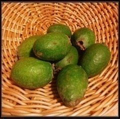

| 2012/11 22 Thu | 297回目*marika |
絶賛テスト勉強中。
眠い......あ、今目閉じたら
寝ちゃう！やばい、どぅする。
ここはあれだ。えっと、
まりっか必殺！
高速まばたきーーーーーーーーーー
こんばんまりっか

...あと3回で300回更新ですが、
何かやりたくて
でも、何をすれば良いか、
わからなくて、
何か良いのあるかな？
まりっ会のみなさん、
ゆるく考えましょう
 ←
←
←
......
昨日の質問回答で、
女子力高いメンバーに関して意外！
というコメントが多かった。
まいまいは理想の女の子な感じなの♪
ねねも料理できるし、
家事とかなんでもこなしてると思う！
若月、あみは
美容に詳しいイメージ。
あみのまつ毛すごーい
きれいなんだよー
メイク上手なんだよー
乃木メンは女子力高い子多いわ

見習いたい。
魚捌けるようになりたい

 ←
←
←
某くま？←から届くであろう
鮭はどぅするうー
......
昨日ママが見たことない果物
買ってきたんだよ。

フェイジョアっていうの。
キウイくらいでちっちゃいの。
みなさん知ってますか⁇
果物屋さんのおっちゃんに
おすすめされたんだって
 あら
あら
あら
酸味があって今までにない味だった。
ビタミンC豊富みたい♪
美容に良きかな^^
......
雑貨屋さんで見つけたピアスを
ネックレスにした、
ずっとお気に入りのやつ

を、付けて「むにっ」
ムニエル食べたい。
ではおやすみなさい。
まりか
コメント(183)
2012/11/22 22:48